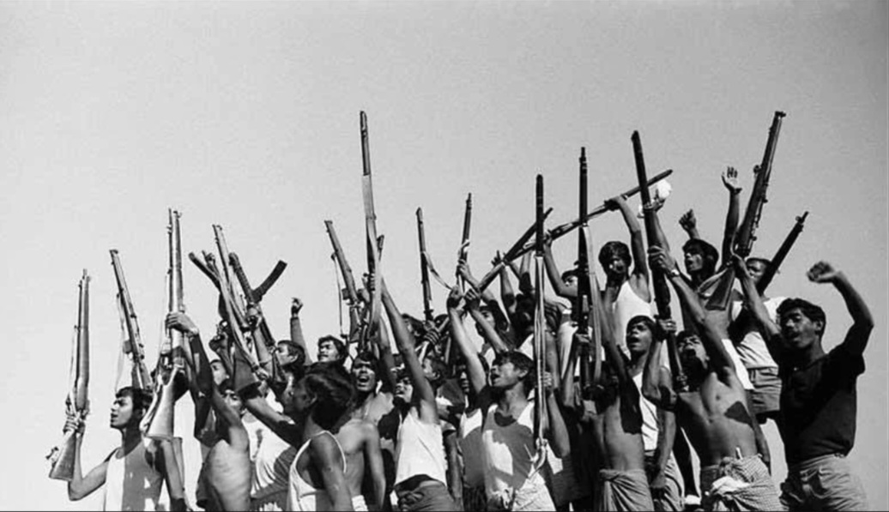
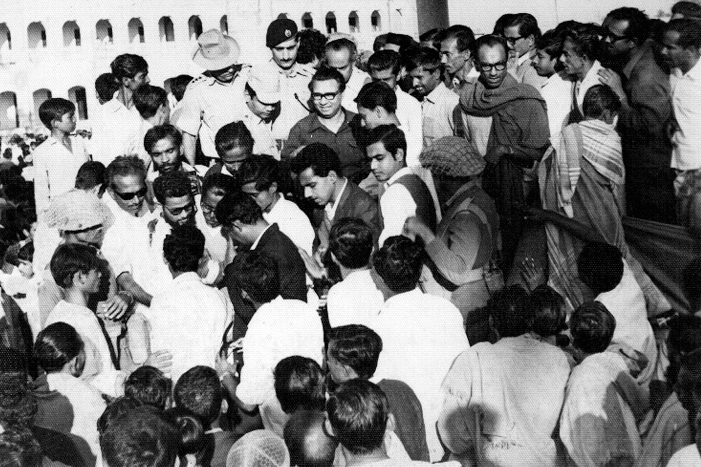
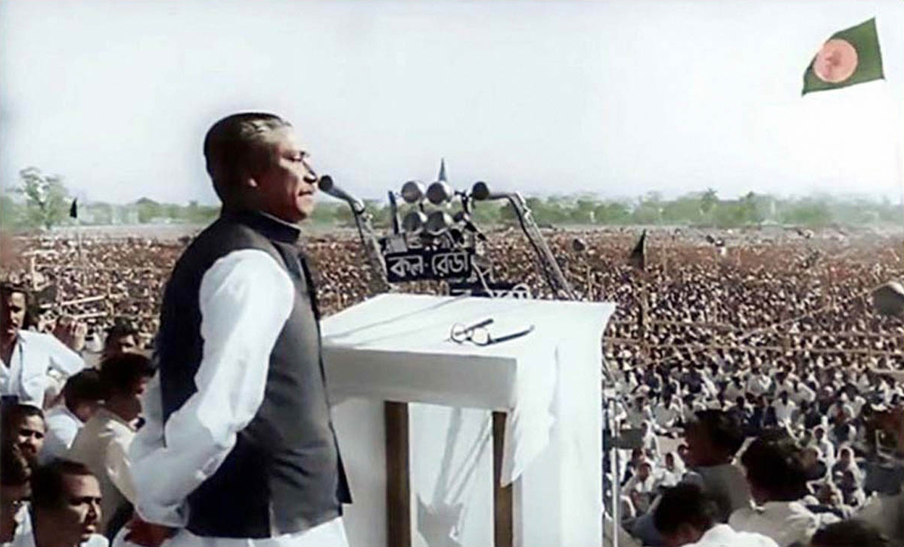
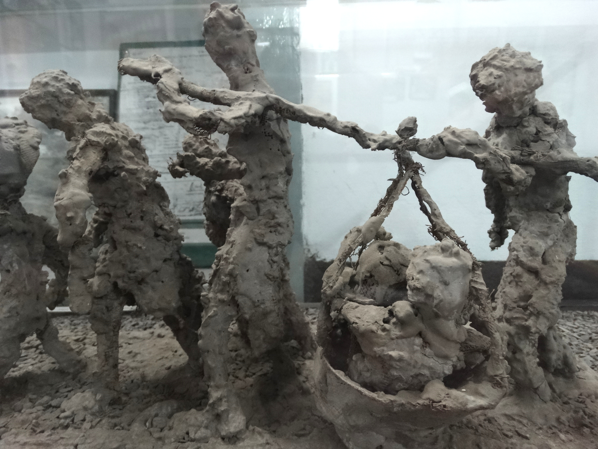
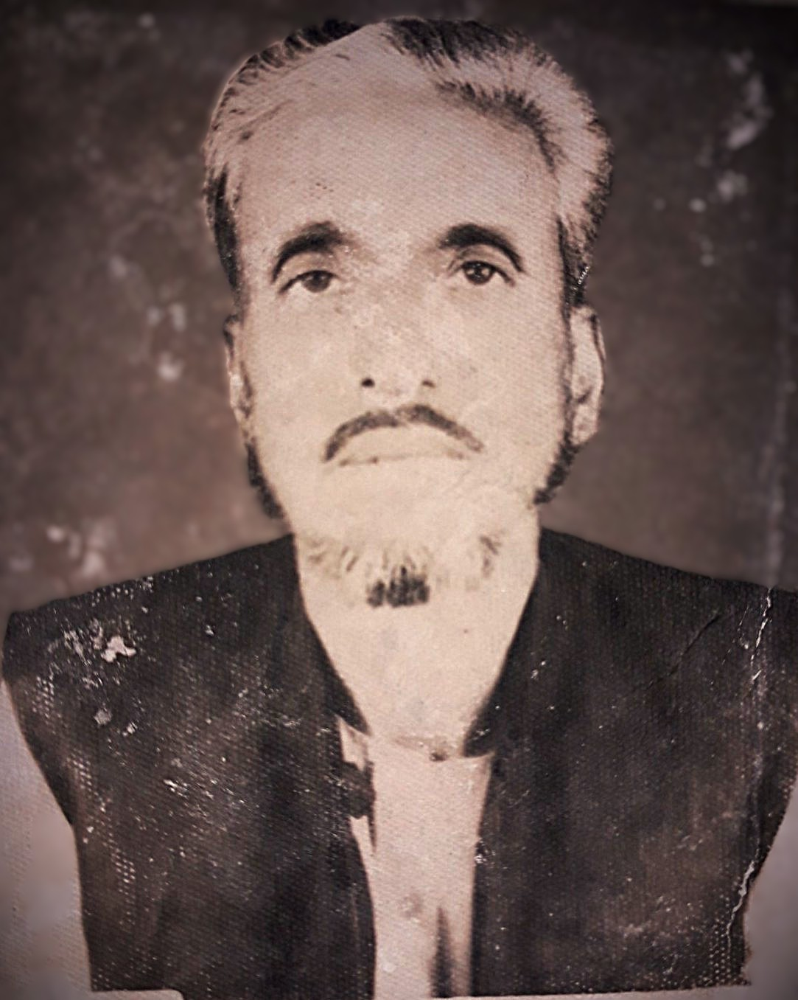
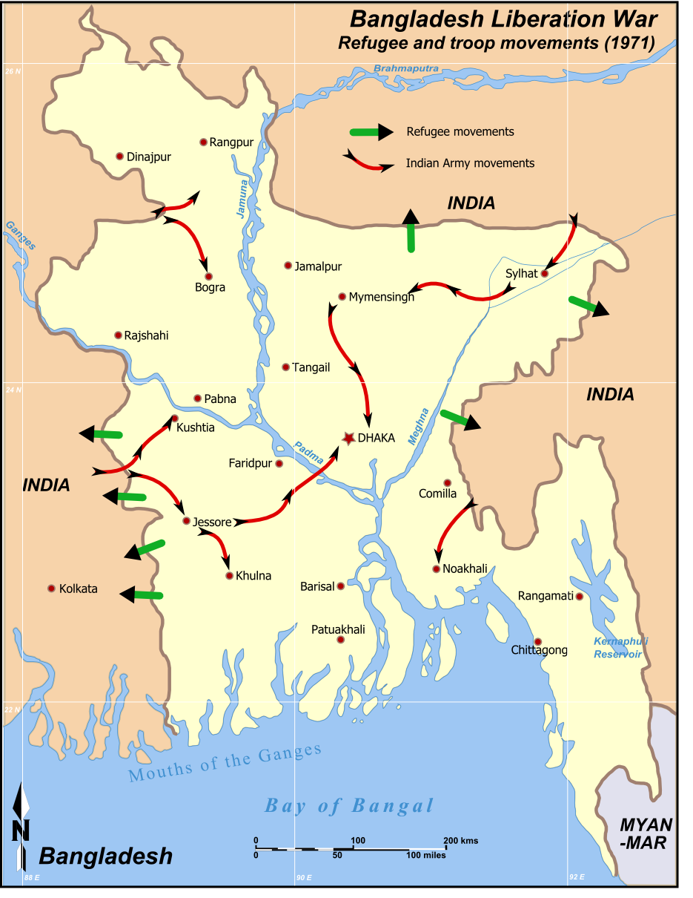
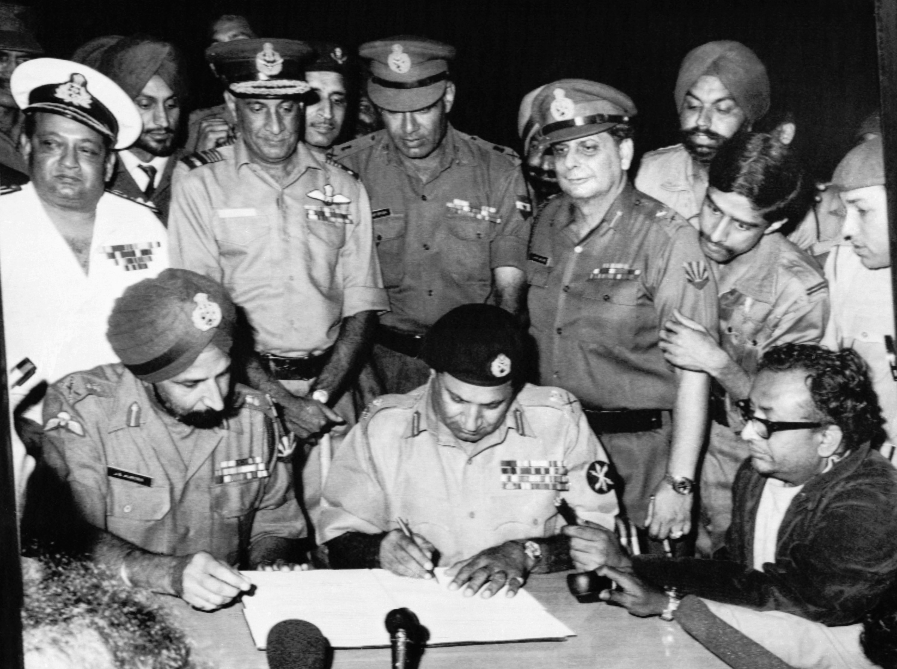

Historical Photographs Gallery
A curated museum-grade collection capturing critical events, frontline guerrilla combatants, refugee movements, and the historic victory of Bangladesh in 1971.
Signing of the Pakistani Instrument of Surrender
Lt. Gen. A. A. K. Niazi signs the surrender terms marking the birth of sovereign Bangladesh.

Bangabandhu Delivering the 7th March Address
Over two million citizens gather to hear the historic call for independence and emancipation.

Mukti Bahini Fighters in Tactical Combat
Freedom fighters advancing across riverine terrain to ambush occupying military garrisons.

Joy Bangla: Freedom Fighters Celebrate Victory
Triumphant freedom fighters celebrate the end of nine brutal months of occupation.

Prime Minister Tajuddin Ahmad in Liberated Jessore
Addressing local citizens and establishing civil administration in freshly liberated territory.

Podium Close-up of Bangabandhu
A portrait of resolute defiance that unified 75 million Bengalis in common struggle.

Memorial to the Ten Million Refugees
Commemorating one of the largest mass refugee flights in modern twentieth-century history.

Jatiya Smriti Soudho (Savar)
Symbolizing the 7 critical stages of Bangladesh's national independence movement.

Guerrilla Commander Md. Arju Miah
Covert commander who organized tactical sabotage and commando operations behind enemy lines.

Maulana Bhashani Attending Eid in Exile
Political solidarity among diverse factions in common mobilization for national freedom.

Operational Sector & Campaign Map
Strategic cartography mapping the coordinated three-pronged advance to liberate Dhaka.

Official Instrument of Surrender Document
Official scan showing the signed capitulation terms of 93,000 Pakistani armed personnel.